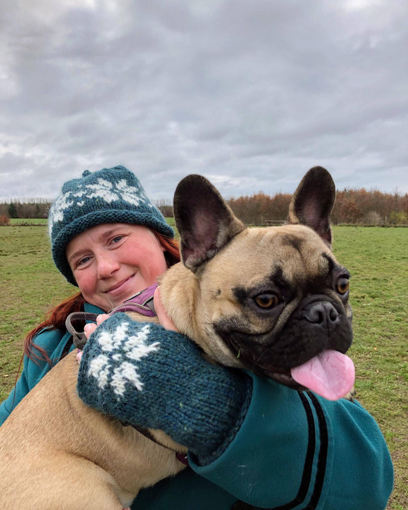
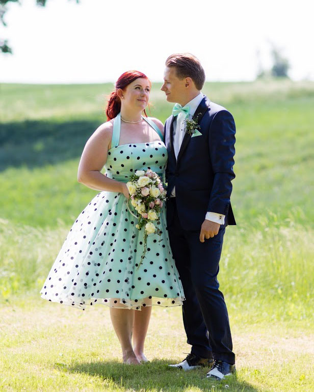
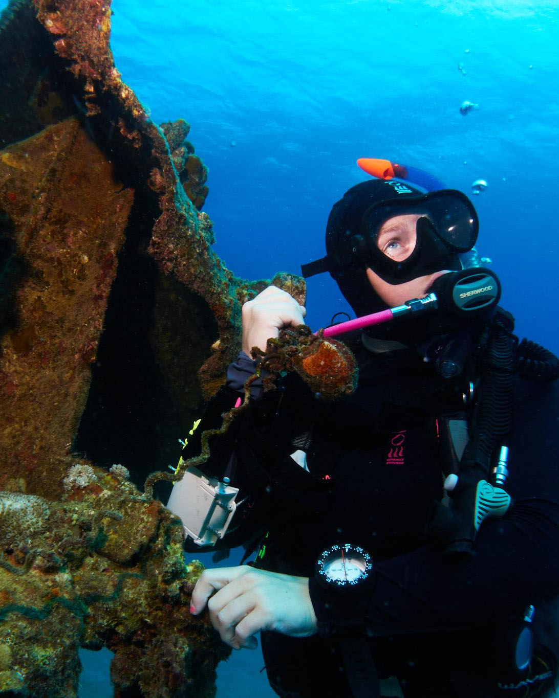

Om mig
Jeg hedder Stine, er netop fyldt 33 og bor i Islev med min mand Daniel og vores hund Hubert.
Jeg blev udlært konditor hos Grannys House i 2012 og har været uddannet PADI dykkerinstruktør siden maj 2015.
Jeg har valgt at uddanne mig til multimediedesigner, fordi jeg gerne vil lære at kode og på sigt blive projektleder indenfor IT.
Da jeg ikke har nogen erfaring indenfor hverken design eller multimedie, så har MMD 1. semester været virkelig spændende og til tider udfordrende for mig!
Jeg er især oppe at køre over at lære at skrive HTML og javascript, men undervisningen i Photoshop og Illustrator har også været en øjenåbner, som jeg gerne vil dygtiggøre mig i fremadrettet.


